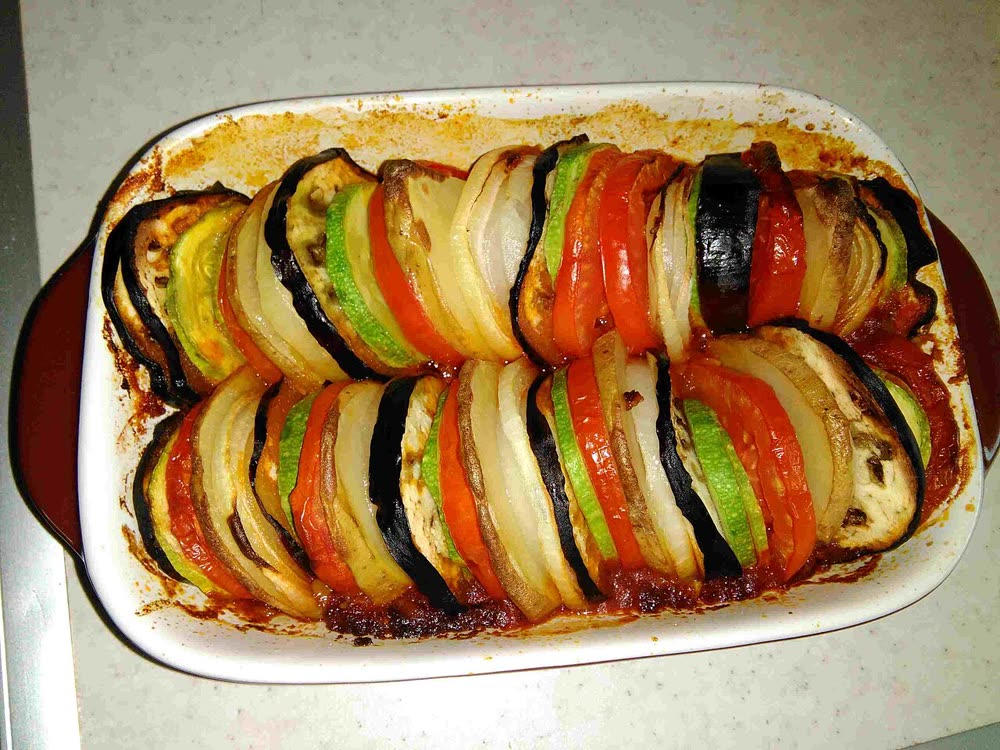

The Weekend TableSummer issue · Vegetables
Slow Sunday
Summer ratatouille, sliced and baked
Forget the stew. Thin rounds of every vegetable at its best, stood on end in a pepper sauce and baked until the edges catch.

Photograph: Behnam N, CC BY-SA 4.0
Serves 4–6Prep 40 minCook 1 hr 15 minDish 30 × 20 cm
For the sauce
- 3 tbsp olive oil
- 1 onion, finely chopped
- 2 red peppers, finely chopped
- 3 garlic cloves, crushed
- 400 g tin chopped tomatoes
- 1 tsp herbes de Provence
- Salt and black pepper
For the vegetables
- 1 aubergine
- 2 courgettes, one green, one yellow
- 4 ripe plum tomatoes
- 1 red onion
- 2 tbsp olive oil
- A few thyme sprigs
Method
- Heat the oven to 190°C (170°C fan). Warm the oil in a pan and soften the onion and peppers for 10 minutes.
- Add the garlic for a minute, then the tomatoes and herbs. Simmer 15 minutes until thick, season and spread over the base of the dish.
- Slice the aubergine, courgettes, tomatoes and red onion into rounds about 3 mm thick. A mandoline makes this quick.
- Stand the slices on end in the sauce, alternating the colours, in rows or a spiral.
- Brush with oil, season, scatter the thyme and cover with a sheet of baking paper cut to fit.
- Bake 45 minutes, then take the paper off and bake another 30, until the vegetables are soft and the edges are browned.
Make aheadIt is even better the next day. Warm it through, covered, at 160°C for 20 minutes.
Turn the page for this issue's guide to summer tomatoes, and five more ways with courgettes.
The Weekend Table42